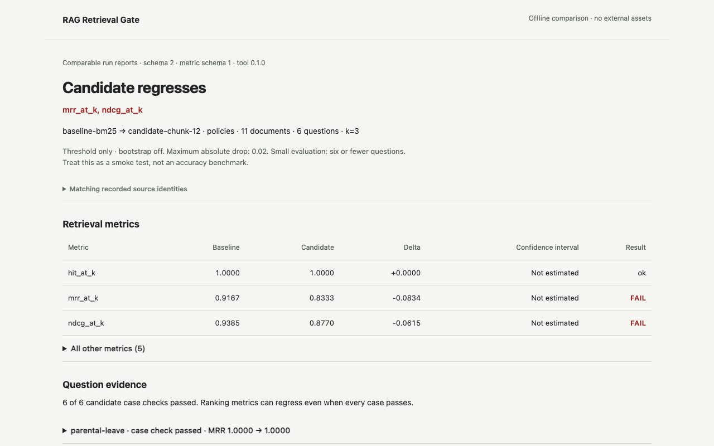
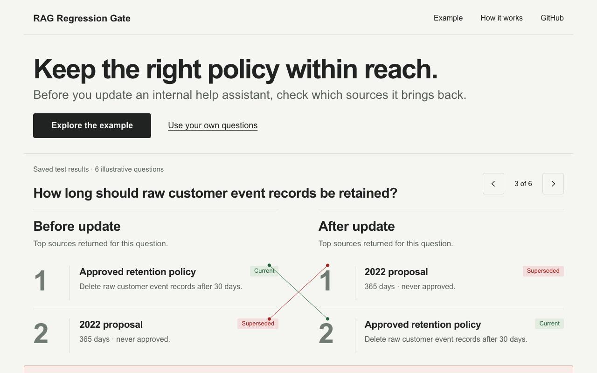

RAG Regression Gate: keep the right policy within reach
Many workplace AI assistants look up documents before they answer. This is called RAG (retrieval-augmented generation). After a search update, an old, unapproved proposal can start appearing above the current staff policy. RAG Regression Gate compares the documents found before and after an update, so a team can catch that before staff rely on it.
The problem
An assistant is only as good as the documents it finds. A change to how it searches can alter which policy comes first, even when every question still finds something relevant. Staff could then get an answer based on an outdated proposal, and nobody would notice from a simple pass count.
The decision it supports
Should this search update be released? In the example, the approved data-retention policy says 30 days. After the update, an old 365-day proposal ranks above it. All six question checks still pass, but the order of results got worse overall, so the gate holds the update until someone investigates.
Limits
The website shows two saved test results. It does not run an assistant, accept uploads or check whether an assistant’s answers are correct. Six questions is a quick sanity check, not a measure of accuracy. To test your own documents, an engineer runs the command-line tool on questions your staff really ask. A pass means nothing got measurably worse; it does not prove anything got better.
This is a personal project with made-up documents. It has not been used by a client, and I have not measured time saved.
Try it step by step
- Open the example. Compare where the approved policy and the old proposal rank before and after the update.
- Step through all six staff questions and open the documents. The hold is for the update as a whole, so some questions show no change.
- Switch to the second saved result, where the update changes nothing. Read either report or download its data (JSON).
- To use it on your own documents, follow the setup in the repository and run the gate on questions you have labelled.
Before and after
The first screen, before and after, using the same six-question example. It used to open on a table of scores. Now it opens on a staff question and the documents found.




Why the design changed
The old report opened with scores only an engineer could read. Now a staff question, the release decision and the documents found come first. Visitors can step through six questions, compare a second saved result and choose a readable report or the raw data.
Technical evidence
For engineers. The website keeps the saved reports, input fingerprints, settings and document text open to inspection. The separate benchmark below uses SciFact, a public set of 5,183 research abstracts and 300 test questions. Its results describe that dataset only.
Benchmark results and engineering trade-offs
BEIR SciFact: 5,183 abstracts, 300 test queries, k=10, each candidate against BM25. Δ is candidate minus baseline.
| Configuration | hit@10 | MRR@10 (Δ, 95% CI) | nDCG@10 (Δ, 95% CI) | Gate | p50 / p95 ms |
|---|---|---|---|---|---|
| BM25 (baseline) | 0.8100 | 0.6321 | 0.6646 | baseline | 2.2 / 7.8 |
| BM25, 12-word chunks | 0.7300 | 0.5316 (−0.1005, [−0.1354, −0.0661]) | 0.5675 (−0.0971, [−0.1283, −0.0671]) | Fail, five metrics | 6.5 / 20.7 |
| MiniLM-L6 dense | 0.7933 | 0.6047 (−0.0274, [−0.0689, +0.0151]) | 0.6451 (−0.0195, [−0.0578, +0.0201]) | Pass, not significant | 8.9 / 13.7 |
| Hybrid BM25 + MiniLM (RRF) | 0.8267 | 0.6536 (+0.0215, [−0.0041, +0.0466]) | 0.6875 (+0.0229, [+0.0019, +0.0437]) | Pass, nDCG significantly better | 11.6 / 20.5 |
| BM25 + cross-encoder re-rank | 0.8167 | 0.6527 (+0.0206, [−0.0136, +0.0562]) | 0.6809 (+0.0163, [−0.0137, +0.0473]) | Pass | 1965.9 / 3923.8 |
The gate blocks the chunking change, which is worse well beyond noise, and passes the hybrid retriever, the only candidate with a significant gain. The re-ranker's gains are not significant on 300 queries and cost about two seconds a query on this CPU.
Trade-offs
- Significance costs power. On a six-question fixture a real one-question regression reads as noise, so the small fixture in CI runs threshold-only as a tripwire.
- Passing is not improving. The dense MiniLM model passes because its drop is within noise, yet every point estimate is negative. A threshold-only gate would have failed it on MRR. If a change must prove it is better, read the significance verdicts, not the pass.
- Deterministic over clever. No LLM judge and no generator in the loop: the gate is free to run on every pull request and gives the same answer twice.
How the release check works
Baseline and candidate search configurations use the same labelled questions. A metric fails when its drop exceeds the practical threshold (0.02 absolute by default) and a 95% paired bootstrap interval excludes zero. The small synthetic examples disable bootstrap checks. Build time, latency and memory are reported, not gated. No language-model judge or answer generator is involved.
Design history and earlier captures
First-screen captures: before the wording pass, after the wording pass and phone view.